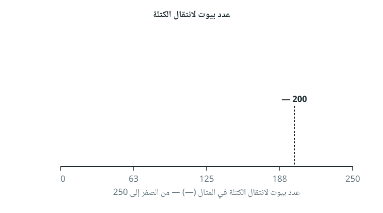

عدد بيوت لانتقال الكتلة
Biot number for mass transfer
عدد بيوت لانتقال الكتلة Bi_m يقارن مقاومة الانتشار الداخلي في جسم صلب بمقاومة انتقال الكتلة عند سطحه: Bi_m = k_c·L/D. وعندما يكون صغيراً (أقل من 0.1) يمكن افتراض أن التركيز منتظم داخل الجسم.
حين يجف جسم رطب أو يمتص مادة من محيطه، تنتقل المادة من السطح إلى المحيط ومن الداخل إلى السطح. وعدد بيوت يقارن بين المقاومتين: إذا كانت المقاومة الداخلية صغيرة (Bi_m صغير) يكون التركيز شبه منتظم، وإذا كانت كبيرة يهيمن الانتشار الداخلي. مثال: حبة طين نصف قطرها 0.0100 m ومعامل انتشار رطوبتها 1.00×10⁻⁹ m²/s ومعامل انتقال الكتلة السطحي 2.00×10⁻⁵ m/s: Bi_m = 2.00×10⁻⁵×0.0100/1.00×10⁻⁹ = 200، وهو كبير جداً، أي أن الانتشار الداخلي يهيمن.
كيف تعمل الظاهرة؟
انتقال المادة داخل الجسم الصلب يحدث بالانتشار الجزيئي، ومعدله يتناسب مع معامل الانتشار وعكسياً مع مربع المسافة. وعند السطح يحدث انتقال بالحمل في الطبقة السائلة أو الغازية المحيطة، ومعدله يتناسب مع معامل الانتقال السطحي. وعدد بيوت هو نسبة هذين المعدلين، فإذا كان كبيراً كان الانتقال السطحي سريعاً والانتشار الداخلي بطيئاً، فيتكون تدرج تركيز داخل الجسم. وإذا كان صغيراً كان الانتشار الداخلي سريعاً والتركيز شبه منتظم.
العلاقة بالأرقام
Bi_m = k_c·L/D، والزمن المميز للانتشار الداخلي τ_D = L²/D، والزمن المميز للانتقال السطحي τ_c = L/k_c. ونسبتهما τ_D/τ_c = Bi_m. مثال: L = 0.0100 m وD = 1.00×10⁻⁹ m²/s: τ_D = 1.00×10⁻⁴/1.00×10⁻⁹ = 1.00×10⁵ s = 27.8 ساعة. وk_c = 2.00×10⁻⁵ m/s: τ_c = 0.0100/2.00×10⁻⁵ = 500 s، والنسبة 200.
مفاهيم متقاربة
يُفرَّق بين Bi_m وBi_h: الأول لانتقال الكتلة والثاني للحرارة، ويستعملان معاملات مختلفة. ويُفرَّق بين Bi_m وSh: شيروود يقارن انتقال الكتلة بالانتشار في السائل، وبيوت يقارن الداخل بالسطح. ويُفرَّق بين Bi_m وFo_m: فورييه يقيس الزمن المنقضي، وبيوت يقيس نسبة المقاومات. وأخيراً يُفرَّق بين Bi_m المحسوب بالطول المميز الحقيقي وبنصف القطر، والفرق عامل 2.
حدود التطبيق
عدد بيوت يفترض معاملات ثابتة لا تعتمد على التركيز، وهذا تقريب يصلح في نطاق ضيق. ولا يصف الانتشار في المواد المسامية حيث يختلف معامل الانتشار الفعلي عن معامل الانتشار الجزيئي. ولا يصف الحالات التي يحدث فيها تغير طوري أو تفاعل كيميائي داخل الجسم. وأخيراً لا يصف الأنظمة التي يهيمن فيها التدفق الشعري لا الانتشار.

| الكمية | القيمة | المصدر |
|---|---|---|
| عدد بيوت لانتقال الكتلة في المثال | 200 — | [1] |
المصادر
- 1 CODATA Value: Boltzmann constant — NIST — CODATA 2022 recommended values (2024). physics.nist.gov/cgi-bin/cuu/Value?k · اطُّلع عليه 2026-11-22
- 2 CODATA Value: molar gas constant — NIST — CODATA 2022 recommended values (2024). physics.nist.gov/cgi-bin/cuu/Value?r · اطُّلع عليه 2026-11-22
استشهد بهذا المصطلح
الصيغتان مبنيتان من بيانات الصفحة نفسها: العنوان والتاريخ ورابط النسخة المنشورة.
عدد بيوت لانتقال الكتلة — Biot number for mass transfer. (2026). ديوان المعرفة — انفراد. https://infiradev.com/diwan/terms/term-biot-number-mass-transfer.html
@misc{term-biot-number-mass-transfer2026,
title = {عدد بيوت لانتقال الكتلة},
titleaddon = {Biot number for mass transfer},
howpublished = {{ديوان المعرفة — انفراد} — مرجع علمي عربي},
year = {2026},
url = {https://infiradev.com/diwan/terms/term-biot-number-mass-transfer.html},
urldate = {2026-11-26},
note = {مراجعة علمية: hermes (مراجعة معتمدة 2026-11-26)}
}
راجعه: hermes (مراجعة معتمدة 2026-11-26) · 2026-11-26 · آخر تحديث 2026-11-22